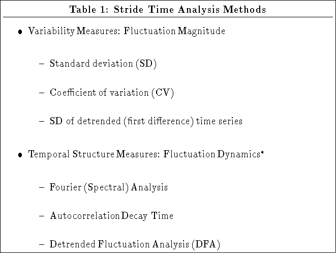
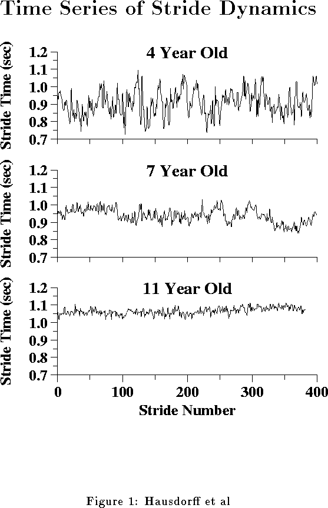
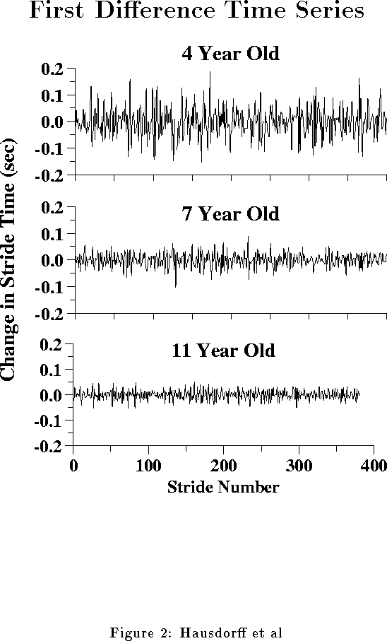
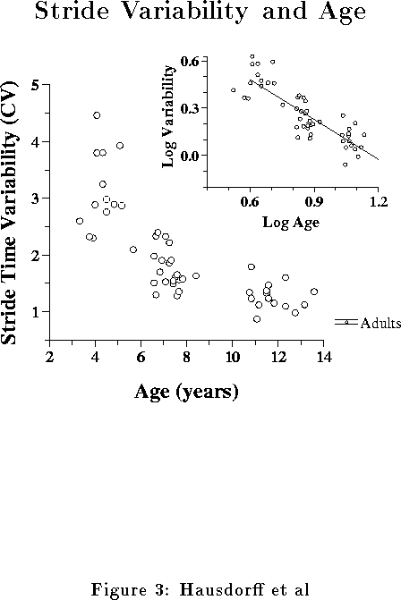
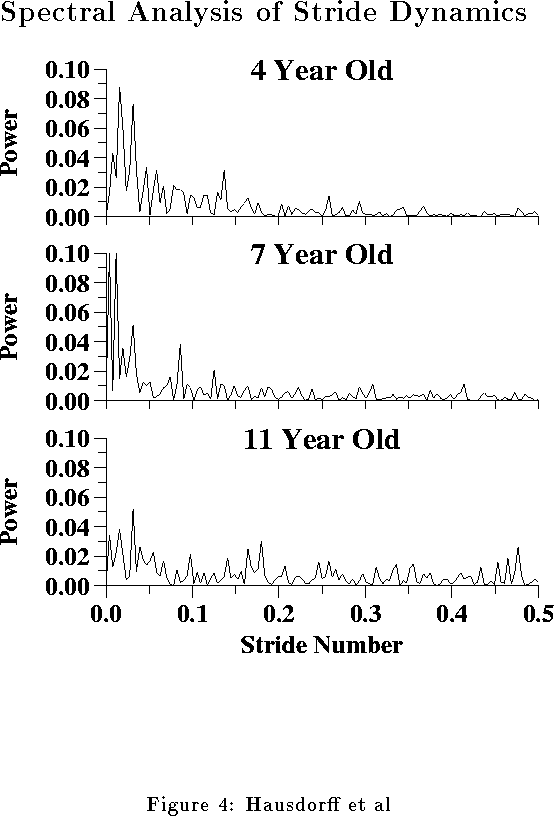
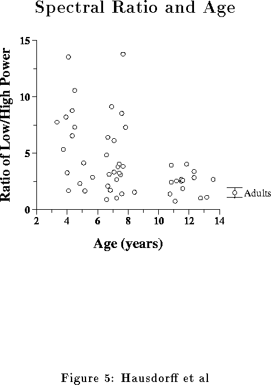
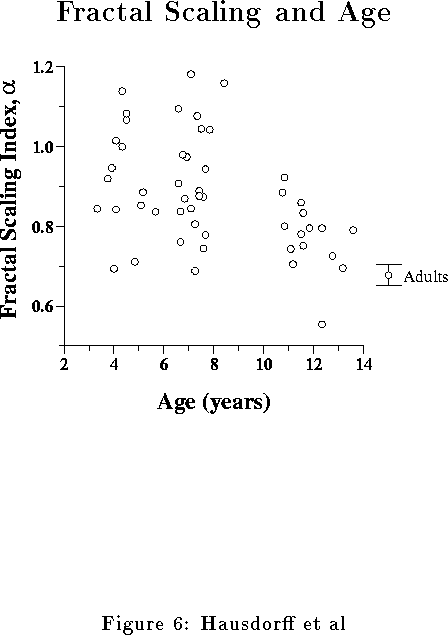

Next: About this document
Up: Title Page
Previous: References
- Figure 1: Representative walking time series of 4, 7 and 11 year old children.
The stride-to-stride
fluctuations are largest
in the 4 year old and smallest in the 11 year old. The coefficient
of variation, a measure of variability, was 8.4, 4.3 and 1.9 % in the
4, 7 and 11 year old, respectively.
- Figure 2: Representative time series after detrending (for same
datasets as shown in Figure 1). Even after detrending, which minimizes the
effects of local changes in the mean value, stride-to-stride
fluctuations in stride time are still largest in the 4 year old and smallest
in the 11 year old. The standard deviation was 60, 27 and 20 msec for
the time series of these 4, 7 and 11 year old subjects. (For graphical
purposes, 2 off-scale data points with values between .2 and .3 sec are not shown for the 4 year old.)
- Figure 3: Stride time variability as a function of age. Shown
is the coefficient of variation (CV) calculated during the 30 stride sub-section of each
subject's time series with the lowest variability. Even during this
period of relatively steady walking, gait variability decreases with age. The
inset shows the data points replotted on log-log axes. The slope of the best fit line
is close to -1.0, indicating that CV decreases inversely with age
(). Note how the stride time variability observed in the oldest
children approaches that of healthy adults (12) (error bars correspond to
the mean
 the standard error for young adults).
the standard error for young adults).
- Figure 4: Representative results of spectral analysis (for datasets
shown in Figure 1). The time series were normalized so that
the total power is the same in each of the spectra. Note the subtle
decrease
in low frequency power and increase in high frequency power with age.
The ratio of low (0.05 to 0.25 stride
 ) to high frequency power
(0.25--0.50
strides)
was 9.0, 4.6 and 1.5 for
the 4, 7 and 11 year old, respectively.
) to high frequency power
(0.25--0.50
strides)
was 9.0, 4.6 and 1.5 for
the 4, 7 and 11 year old, respectively.
- Figure 5: Ratio of power in the relatively low (0.1 to 0.2 stride)
to relatively high (0.3 to 0.4 stride) frequency bands decreases with age.
Note that this index of stride dynamics excludes highest and
lowest frequencies.
In the oldest
children, the ratio approaches that of healthy adults (error bars correspond to
the mean the standard error for young adults).
See also Table 3.
- Figure 6: Fractal scaling index,
 , decreases with age.
This finding suggests an age-related change in stride-to-stride dynamics over the
range of 10 to 20 strides. The scaling exponent shown here was
determined after 2nd order detrending of each window of observation.
Note how observed in the oldest
children approaches that of healthy adults (error bars correspond to
the mean the standard error for young adults).
, decreases with age.
This finding suggests an age-related change in stride-to-stride dynamics over the
range of 10 to 20 strides. The scaling exponent shown here was
determined after 2nd order detrending of each window of observation.
Note how observed in the oldest
children approaches that of healthy adults (error bars correspond to
the mean the standard error for young adults).
=.2in

Note that unlike variability measures, temporal structure measures
are sensitive to the order of the data points in the time series.
SD: standard deviation; CV: coefficient of variation. and  denote p < .005 and p < .0001, respectively,
compared to the 6 and 7 year olds. denotes p < .0001
comparing the oldest and youngest groups.
Kruskal-Wallis tests detected
significant differences among the three groups for all measures (p <
.0001).
denote p < .005 and p < .0001, respectively,
compared to the 6 and 7 year olds. denotes p < .0001
comparing the oldest and youngest groups.
Kruskal-Wallis tests detected
significant differences among the three groups for all measures (p <
.0001).
denotes p < .05
compared to the 6 and 7 year olds.
denotes p < .005
comparing the oldest and youngest groups.
Kruskal-Wallis tests detected
significant differences among the three groups for all measures except high frequency power.
|
Table 4: Effects of Age on Stride Time Dynamics |
|
3 & 4 Year Olds |
6 & 7 Year Olds |
11--14 Year Olds |
| Variability | | | -- |
| Low/High Frequency Power | | | -- |
| Autocorrelation Decay Time | | -- | -- |
| Fractal Scaling Exponent | | | -- |
Compared to the oldest children in whom stride time dynamics
are the most adult-like.
Note how different aspects of
the temporal structure of the stride dynamics tend to mature at
different ages. (The low/high ratio was not statistically different in the two youngest groups,
however, this representation reflects the observed trend toward a decreased ratio
in the 6 and 7 years olds compared to the 3 and 4 year olds.)






Next: About this document
Up: Title Page
Previous: References